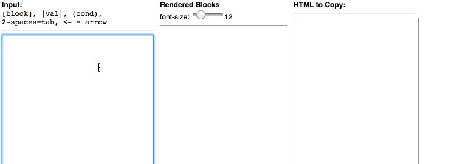

[block], |val|, (cond),
2-spaces=tab, <- = arrow
2-spaces=tab, <- = arrow,
{} should be on own line
A hacked together janky string parser that lets you dictate how and where AP CSP-style blocks are drawn by converting from AP CSP Pseudocode, or from using a markup language that I made up and am calling APML - AP Markup Language.
What this is NOT:This is NOT an AP pseudocode complier, validator, coding environment, or any other thing that might lead you to believe this is doing something beyond drawing pretty picutres on the screen.
It will NOT ensure you write valid AP-style pseudocode or blocks. You can draw it wrong using this tool.
What problem does it solve?Writing the text-based form of AP pseduocode is easy. Drawing the blocks is anoying so this helps you automate it to some degree. With this tool you can quickly construct AP-style block code.
The main thing you might want is to screen-cap an image of the code for use on handouts, quizzes, etc. You can also easily copy out the HTML - the same code that is rendered on the screen - for use on your own site. You'll need the blockStyles.css file that accompanies it. Yes, I made up my own arbitrary tags.
How does APML work?First, APML is completely made up...by me...for purposes of this app. So you know, good luck.
Think of apml as a weird hybrid a drawing tool. You type ASCII text in the input box and special characters are interpreted to draw AP-style blocks. There are really only 6 special characters: [ ] ( ) | <- (square brackets, parentheses, pipes, and left-arrow).
Here's how to use it:

Mini doc:
[ code ] -- Rounded Rectangle - used by most ap-style statements. e.g. [a <- 7]( condition ) -- Oval - used by conditions and conditional expressions| value/expr | -- Square Rectangle - used for arguments, parameters and some expressions <- -- Converts to left arrow symbol: ←IF, REPEAT, PROCEDURE, FOR -- The interpreter will recognize these keywords and make the block be shaded in gray. You don't have to do anything to make the blocks gray. It is done auto-magically.